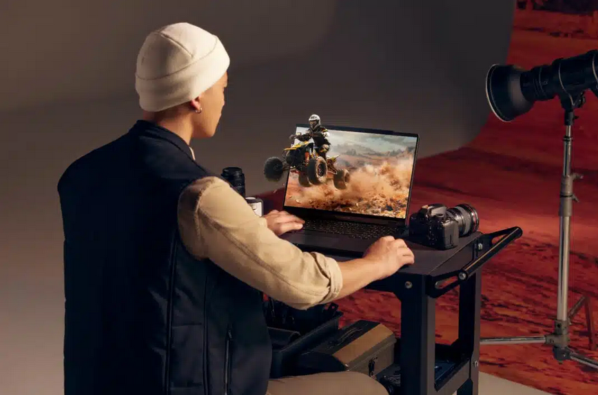

Les technologies d'écran
Voici quelques articles sur les technologies d'écran que j'ai récolté via google alertes :
Nanosys présente la technologie d’affichage à points quantiques électroluminescents
Cette technologie présentée au CES 2023 permettrait de réduire considérablement les coûts en électricité car elle émet là quasi-totalité de se qu'elle absorbe. Tout en obtenant des résultats d'affichages similaires voir supérieur au QD-OLED.
Il existe plusieurs types d'OLED, mais l'OLED T (transparent) est un type spécifique qui permet de créer des écrans transparents qui peuvent être utilisés pour afficher des images sur des surfaces vitrées ou translucides. Les OLEDs T sont fabriqués en utilisant des matériaux organiques qui ont la capacité de laisser passer une partie de la lumière, ce qui permet de voir à travers l'écran lorsqu'il n'est pas allumé. technologie est encore en développement et est considérée comme étant l'avenir de la technologie d'affichage.
Une vidéo qui montre l'OLED T avec du tactile combiné :

Les écrans 3D sont-ils l'avenir des ordinateurs portables ?
Des nouveaux écrans 3D ont vu le jour et on été présenté durant la CES 2023, ACER à équipé son nouvelle ordinateur portable de cette technologie (Le "Acer Predator Helios 300"). Même si les écrans 3D existent depuis un moment déjà il y avait plusieurs problèmes comme le mal de tête rapide lors de la lecture sur un écran 3D ou la fatigue oculaire rapide. La technologie s’appelle Spatial Vision et provient d’une société appelée Dimenco. Grâce à des caméras de suivi oculaire placées dans la webcam de l’ordinateur portable, le système peut suivre avec précision votre visage pour créer une image 3D parfaite.
Présentation de celui-ci :